1V prispevku prikažemo sistem za zaznavanje sprememb v rabi besed v slovenščini, ki omogoča samodejno zaznavanje pomenskih premikov v različnih časovnih obdobjih. Najprej predstavimo tehnično zasnovo in zahteve sistema, metodologijo za odkrivanje sprememb in grafični uporabniški vmesnik, ki omogoča uporabniku prijazno uporabo, nato pa demonstriramo, kako je sistem mogoče implementirati na referenčnem korpusu slovenščine Gigafida 2.0 in ga uporabiti za iskanje in analizo sprememb v rabi besed v različnih časovnih obdobjih. Rezultate sistema evalviramo s pomočjo kognitivno-jezikoslovne in leksikalne analize najbolj spremenjenih pridevnikov in samostalnikov, kjer raziščemo in kategoriziramo pomene in rabe besed v zaznanih gručah glede na njihovo semantično motiviranost in zastopanost v slovarju. Nazadnje sistem uporabimo na primeru reprezentacije migracij v časovnih obdobjih z ročno določenimi ločnicami, ki so signifikantno vplivale na odnos do migracije in migrantov v Sloveniji, ter tako preverimo njegovo uporabnost za sociolingvistične raziskave. Z jezikoslovnega vidika ugotavljamo, da sistem razločuje pomensko, skladenjsko in drugače kontekstualno različne rabe, in pokažemo, da omogoča zaznavo tako kratkoročnih kot dolgoročnih sprememb. Po drugi strani ugotavljamo, da sistem jasno prikaže vpliv zunanjih dejavnikov v specifičnih časovnih obdobjih na jezik in diskurz in je tako uporabno orodje za sociolingvistično analizo.
2Ključne besede: zaznavanje sprememb v rabi besed, semantika, pomenski premiki, sociolingvistika
1This paper presents a system for detecting changes in Slovene word usage, enabling the automatic identification of semantic and other shifts across different time periods. We first introduce the system’s technical design and requirements, the methodology for detecting changes, and the graphical user interface, which ensures a user-friendly experience. We then demonstrate how the system can be implemented on the reference corpus of Slovene, Gigafida 2.0, and used to search for and analyse changes in word usage across various time periods. The system’s results are evaluated through a cognitive-linguistic and lexical analysis of the most changed adjectives and nouns, where we examine and categorise word meanings and usages within the detected clusters based on their semantic motivation and representation in dictionaries. Finally, we apply the system to a case study of migration representation in different time periods with manually defined boundaries, which have significantly influenced attitudes toward migration and migrants in Slovenia, thereby testing its applicability for sociolinguistic research. From a linguistic perspective, we observe that the system distinguishes between semantic, syntactic, and other contextually distinct usages, demonstrating its ability to detect both short-term and long-term changes. Furthermore, we observe that the system clearly illustrates the impact of external factors on language and discourse in specific time periods, making it a valuable tool for sociolinguistic analysis.
2Keywords: word usage change detection, semantics, meaning shifts, sociolinguistics
1Jezik je dinamičen sistem, ki se z uporabo v družbenih interakcijah, spremembami kulturnih praks in razvojem tehnologije nenehno spreminja.1 Spremembe so lahko vidne na fonološki, skladenjski, leksikalni ali semantični ravni, torej zadevajo od sprememb v izgovorjavi do spremembe pomenov besed. Preučevanje semantičnih sprememb se je pričelo še pred pojavom sodobnega jezikoslovja v poznem 19. in zgodnjem 20. stoletju, področje pa vse od takrat napreduje.2 Zaznavanje teh sprememb je pomembno za različne sinhrone in diahrone jezikoslovne raziskave, prispeva pa tudi k širši družboslovni analizi in omogoča vpogled v različne dejavnike sprememb.3 Z vidika kognitivnega jezikoslovja jezik poleg zunanjih odraža tudi notranje dejavnike, tj. procese zaznavanja in razumevanja sveta okrog nas.4 Med kognitivnimi mehanizmi, ki botrujejo pomenskim prenosom, sta ključni metonimija, ki temelji na sorodnosti, in metafora, ki temelji na podobnosti.5
2Raziskave razvoja jezika se bodisi osredotočajo na dolgoročne spremembe pomena v diahronih korpusih ali pa na precej pogoste kratkoročne pojave, kot je na primer pojavitev besede v novem kontekstu. Pri slednjem ni nujno, da gre za spremembo ali razširitev pomena, saj pomen v kontekstu ustreza enemu od pomenov v slovarju.6 Ko v pričujočem članku govorimo o »spremembah v rabi besed«, se nanašamo na vse vrste sprememb – kratkoročne ali dolgoročne, ki poleg jasnih pomenskih premikov vključujejo tudi spremembe kontekstov rabe besed.
3Samodejno zaznavanje sprememb v rabi besed je zelo aktivno raziskovalno področje. Medtem ko so bili prvi sistemi za samodejno zaznavanje semantičnih sprememb razviti pred več kot desetletjem,7 so raziskave v zadnjem času dobile dodaten zagon z idejo o uporabi besednih vložitev. Te so visokodimenzionalni matematični vektorji, ki predstavljajo besede po načelu distribucijske semantike: pomen besed je odvisen od njihove uporabe v kontekstu oziroma sopojavljanja z drugimi besedami.8 Najsodobnejši sistemi za zaznavanje sprememb uporabljajo različne vrste besednih vložitev, za sistematično primerjavo različnih metod pa je bilo v zadnjih letih organiziranih tudi več tekmovanj in delavnic.9 Delavnice so sicer večinoma namenjene zaznavanju sprememb v jezikih z veliko viri in govorci, kot so angleščina, ruščina, nemščina, italijanščina in španščina, jezikom z manj viri in govorci, med katerimi je tudi slovenščina, pa se doslej ni posvečalo veliko pozornosti.
4Pričujoči članek temelji na konferenčnem prispevku, ki so ga pripravili Martinc in sod.,10 v katerem sta predstavljena izdelava prvega javno dostopnega sistema za zaznavanje sprememb v rabi posameznih besed za slovenščino in uporabniku prijazen spletni vmesnik.11 Medtem ko omenjeni konferenčni članek zgolj na kratko demonstrira, kako je sistem mogoče uporabiti za jezikoslovne analize, v tem prispevku poleg predstavitve celotnega cevovoda ponudimo tudi podrobnejšo evalvacijo rezultatov. Sistem ovrednotimo predvsem z vidika njegove uporabnosti za razpoznavanje pomenskih premikov, pri čemer iščemo razširitve in/ali zožitve osnovnega pomena, ki so običajno metaforično ali metonimično motivirane. Poleg tega prikažemo uporabnost sistema za sociolingvistične analize z analizo izbrane leksike s področja migracij, kar omogoča vpogled v odnos lokalnega prebivalstva do priseljevanja v različnih obdobjih in naslavljanje širših družbenopolitičnih posledic polarizirajočih javnih razprav o migracijah.
1V zadnjem času področje avtomatskega zaznavanja sprememb v rabi besed postaja vse pomembnejše, saj je uporabno ne le v jezikoslovju, na primer v diahronih korpusih za raziskave zgodovinskega razvoja jezika12 ali specifičnih semantičnih premikov, kot je metafora,13 temveč tudi v sinhronih korpusih pri različnih socioloških in kulturoloških raziskavah. Med temi lahko omenimo na primer zaznavanje kratkoročnih sprememb v diskurzu, ki jih povzročijo krizni dogodki, kot je pojav neologizmov ob epidemiji virusa covid-19,14 ali pa zaznavanje ideološko pogojenih razlik v diskurzu.15
2Prvi sistemi za samodejno zaznavanje sprememb v rabi so bili razviti pred več kot desetletjem. Temeljili so na metodah, ki vzorčijo in analizirajo predvsem pogostost besed v različnih časovnih obdobjih.16 S takimi metodami lahko v diahronih korpusih, ki zajemajo različna obdobja, zgolj na podlagi spremembe v številu pojavitev odkrivamo neologizme ali nove pomene besed, na primer pojav besede medmrežje ob nove tehnologije konec 20. stoletja, pa tudi upad nekaterih jezikovnih oblik, kot je deležnik preteklega časa (videvši, pozabivši). Podroben opis metod, ki temeljijo na pogostosti, je mogoče najti na primer v preglednem članku Tahmasebi, Borin in Jatowt.17 Ti pristopi se danes le redko uporabljajo, saj so se s pojavom besednih vložitev razvile mnogo učinkovitejše metode. Vložitve so eden od načinov, s katerimi lahko informacije v jeziku matematično predstavimo in katerih izgradnja temelji na načelu distribucijske semantike: pomen besed je odvisen od njihove uporabe v kontekstu oziroma sopojavljanja z drugimi besedami.18 Besedne vložitve so reprezentacije posamičnih besed v vektorskem prostoru z veliko dimenzijami, običajno od 100 do 1000. Ustvarimo jih s pomočjo jezikovnih modelov, ki se učijo napovedovati sosednje ali manjkajoče besede na veliki količini besedil. Za razliko od prejšnjih metod, ki so temeljile le na pogostosti pojavitev, besedne vložitve vsebujejo tudi skladenjske in pomenske informacije.19 V ustvarjenem vektorskem prostoru imajo pomensko in skladenjsko podobne besede tudi podobne vložitve, z ustvarjenimi vektorji pa lahko izvajamo različne računske operacije, kot je »računanje« analogij.20
3Sodobni sistemi za samodejno zaznavanje sprememb v rabi besed temeljijo na izgradnji vložitev za vsako posamično časovno obdobje (rezino korpusa) posebej, pri čemer so te lahko ustvarjene na dva načina. Pri prvem nastanejo t. i. statične vložitve, saj se za vsako besedo ustvari le ena vložitev, ki je nekakšno povprečje vseh njenih rab v učnem korpusu. Novejši tip vložitev, ki jih pridobimo na primer z jezikovnimi modeli tipa BERT,21 pa so t. i. dinamične ali kontekstualne vložitve: za besedo dobimo drugačno vložitev glede na specifično sobesedilo (npr. poved), v katerem je uporabljena. To omogoča razločevanje različnih pomenov in rab besed, denimo med besedo golf, uporabljeno v pomenu športne discipline, ali besedo golf, s katero označujemo model avtomobila.
4Pri metodah za samodejno zaznavanje sprememb v rabi, ki uporabljajo statične vložitve, so te vložitve običajno najprej naučene na vsaki časovni rezini korpusa posebej in zatem poravnane, da postanejo med seboj primerljive. V prispevku Kim in sod.22 je bila ta metoda uporabljena za zaznavanje angleških besed, ki so znatno spremenile rabo med letoma 1900 in 2009 (npr. besedi gay in cell). Ker je posamična beseda (oziroma vse njene rabe) znotraj časovne rezine predstavljena samo z eno vektorsko reprezentacijo, so metode, ki temeljijo na statičnih vložitvah, manj natančne, prav tako pa rezultate težje interpretiramo. Omejitev je mogoče odpraviti z uporabo kontekstualnih vložitev, ki omogočajo modeliranje različnih pomenov in rab. Vsi taki pristopi k zaznavanju sprememb v rabi vsebujejo tudi postopek agregacije, v katerem so kontekstualne vložitve posameznih pojavitev besed v določenem časovnem obdobju v korpusu združene v smiselne časovne reprezentacije. Za agregacijo se uporabljajo različne metode, od preprostega povprečenja23 in primerjave parov vektorjev24 do združevanja v gruče.25 Pri zadnjem se predvideva, da posamezna gruča reprezentacij združuje eno rabo oziroma pomen dane besede. Najbolj priljubljena metoda za primerjavo gruč iz različnih časovnih obdobij, in s tem pridobitev kvantitativne ocene spremembe v rabi določene besede, je Jensen-Shannonova divergenca (JSD),26 ki so jo uporabili na primer Giulianelli in sod.27 ter Martinc in sod.28 Pri tej primerjamo distribucije različnih gruč (ki naj bi ustrezale pomenom in rabam) v različnih časovnih obdobjih in tako ugotovimo, ali se je distribucija pomenov/rab v dveh ali več obdobjih spremenila. To metodo so Montariol in sod.29 uporabili za identifikacijo kratkoročnih (mesečnih) sprememb v rabi angleških besed med pandemijo COVID. Tako na primer beseda strain, ki se je v prvih dveh mesecih pandemije večinsko uporabljala v kontekstu »različic koronavirusa« (angl. coronavirus strain), v naslednjih mesecih pandemije pridobi novo večinsko rabo v kontekstu »obremenitve zdravstvenega sistema« (angl. strain on the health system).
5Raziskave sprememb v rabi besed v slovenščini so redke. Med tistimi, ki na splošno analizirajo in kategorizirajo različne pomene in pomenske premike, se v slovenščini pojavljajo tako teoretski kot empirični pristopi, predvsem z vidika leksikologije in leksikografije. Med prvimi lahko omenimo dela Ade Vidovič Muha in Jerice Snoj,30 ki preučujeta večpomenskost leksemov. Med tipi večpomenskosti ločujeta pomensko vsebovanost (pod- in nadpomenskost) ter pomenske prenose, ki vključujejo tri vrste: metaforo, metonimijo in sinekdoho. Med raziskavami, ki bodisi zaznavajo in/ali analizirajo pomenske premike na podlagi dejanske rabe, lahko omenimo dve študiji. Gantar, Arhar Holdt in Pollak31 se ukvarjajo z odkrivanjem nove leksike in pomenov predvsem s pomočjo luščenja kolokacij iz korpusa Janes,32 ki vsebuje računalniško posredovana besedila. Znotraj istega korpusa, vendar z omejitvijo na tvite, raziskavo izvedeta tudi Fišer in Ljubešić.33 Natančneje, s pomočjo besednih skic analizirata 200 besed, pri katerih so bile zaznane spremembe v vektorski reprezentaciji v primerjavi z referenčnim korpusom standardne slovenščine. Raziskava je narejena s pomočjo statičnih vektorskih vložitev in vsebuje velik delež napak (45 odstotkov), vendar predstavlja zanimivo kategorizacijo sprememb. Poleg novih pomenov so v analizo namreč vključene tudi manj očitne razlike v rabi, analiza pa razlikuje med manjšimi in večjimi premiki. Pri tem naj bi bili manjši premiki vezani na spremembe v distribuciji (že uveljavljenih) pomenov in omejenost na določene vzorce ali pomene, do večjih premikov pa pride zaradi aktualnih dogodkov, razlik v registru ali razlik v mediju. Raziskava se od pričujoče razlikuje v metodologiji in v tem, da primerja žanrsko in jezikovno zelo različna besedila, medtem ko se naš sistem osredotoča na zaznavanje sprememb skozi čas.
6Med raziskavami, ki uporabljajo sodobne metode za samodejno zaznavanje sprememb v slovenščini, je relevantna predvsem pred kratkim izvedena študija Pranjića in sod.34 V raziskavi je bila izdelana prva testna množica za testiranje različnih slovenskih modelov za zaznavanje sprememb v rabi besed. Ročno označevanje je bilo izvedeno na podlagi kvantitativne, stopenjske ocene podobnosti pomenov besede v paru povedi. V študiji je predstavljen tudi nov model za zaznavanje semantičnih premikov s pomočjo optimalnega transporta, med drugim pa so preizkusili tudi metodologijo, ki jo opisujemo v tej študiji. Nazadnje naj omenimo še raziskavo Martinca in sod.35, kjer je bil sistem za zaznavanje sprememb v rabi uporabljen za analizo gledišč različnih slovenskih medijev. V raziskavi se osredotočajo na razlike v poročanju med osrednjimi in konservativnimi mediji o tematikah, povezanih s skupnostjo LGBTIQ. Glavna ugotovitev raziskave je, da skupini medijev najbolj drugače uporabljata besedo globok. Ta se v osrednjih medijih večinoma uporablja v konvencionalnem pomenu, medtem ko se na konservativnih novičarskih portalih pretežno uporablja v kontekstu zveze »globoka država«.
1Za predlagani sistem za zaznavanje sprememb v rabi v prvi vrsti potrebujemo korpus, ki vsebuje besedila iz različnih časovnih obdobij in ga je mogoče razdeliti na časovne rezine. Dolžina posameznih časovnih obdobij in razmejitve med obdobji so poljubne, v praksi pa so pogojene z raziskovalnim vprašanjem in količino podatkov, ki je na voljo. V idealnem primeru naj bi vsaka časovna rezina korpusa vsebovala vsaj pet milijonov besed. To omogoča sestavo obsežnega besedišča, ki mu lahko določimo spremembo v rabi skozi čas. Vsaka beseda, za katero želimo izmeriti spremembe v rabi, se mora za veljavnost rezultatov v vsaki časovni rezini korpusa pojaviti vsaj 20-krat, v idealnem primeru vsaj 100-krat. Manj kot 20 pojavitev določene besede namreč ne omogoča izdelave dovolj kakovostne distribucije rab besede za posamezno obdobje.
2Eden od pomembnih kriterijev za izbor metode je tudi skalabilnost. Večina metod, ki temeljijo na kontekstualnih vložitvah, je neprimernih zaradi ogromnih potreb po delovnem spominu (RAM), saj je treba v spomin shraniti vektorsko reprezentacijo za vsako pojavitev besede v korpusu. Izbrana metoda po drugi strani s pomočjo posebnega mehanizma predhodne agregacije vektorskih reprezentacij na podlagi kosinusne podobnosti omogoča, da se za vsako besedo v določeni časovni rezini korpusa shrani do največ 200 besednih vložitev, kar omogoča rabo metode na velikih korpusih in na celotnem besedišču korpusa.36
3Največji korpus, na katerem je bil preizkušen sistem, je vseboval približno 100 milijonov besed na časovno rezino in besedišče, sestavljeno iz približno 8000 lem,37 a teoretično zgornje meje za velikost korpusa ni. Vendar pa je treba upoštevati nekatere praktične omejitve, saj se z velikostjo besedišča in številom časovnih obdobij povečajo tudi zahteve po diskovnem spominu.
1Sistem za zaznavanje sprememb v rabi besed je sestavljen iz več zaporednih korakov, združenih v tako imenovani »cevovod«. Najprej potekajo predprocesiranje korpusa, adaptacija jezikovnega modela na domenski korpus, razdelitev korpusa na časovne rezine in luščenje kontekstualnih vložitev iz jezikovnega modela. Sledijo gručenje kontekstualnih vložitev, izdelava distribucij gruč glede na časovno obdobje in merjenje sprememb v rabi med časovnimi obdobji. Vsakega od teh korakov pojasnimo spodaj.
1Sistem nam obenem omogoča, da s pomočjo metode za interpretacijo hitro razumemo, kako se raba posamezne besede med časovnimi obdobji spreminja. To dosežemo z uporabo mere TF-IDF (angl. term frequency-inverse document frequency). Za vsako rabo posamezne leme imamo na voljo kontekst, tj. poved, v kateri se določena lema pojavi v obliki neke pojavnice. Povedi, ki vsebujejo posamezne rabe besede, ki pripadajo isti gruči, najprej združimo v t. i. »dokument«, nato pa za vsak tak dokument izluščimo najbolj razločevalne unigrame, bigrame in trigrame, torej nize ene, dveh ali treh besed, ki dokumente med seboj najbolje razločijo.42 Te pridobimo s pomočjo algoritma TF-IDF, pri čemer kot korpus obravnavamo skupek vseh »dokumentov«, tj. množico vseh povedi, v katerih se posamezna lema pojavi. Iz korpusa izključimo nepolnopomenske besede (angl. stopwords)43 in besede, ki se pojavljajo v več kot 80 odstotkih gruč. S tem zagotovimo, da so izbrani ključni izrazi za vsako gručo čim bolj specifični in jih tako kar najbolje ločijo. Na koncu dobimo seznam do sedmih ključnih izrazov za vsako gručo, ki nudijo vpogled v posamezno rabo besede.
1Do rezultatov sistema je mogoče dostopati prek spletnega uporabniškega vmesnika, ki omogoča hitro interpretacijo in analizo sprememb v rabi.44 Sestavljen je iz dveh ločenih komponent. Prva ponuja globalni pogled na celoten korpus oziroma vsebovana obdobja v obliki tabele (Slika 1), kjer najdemo vse besede, ki se v korpusu pojavijo najmanj 20-krat, skupaj z njihovo izmerjeno spremembo v rabi med dvema obdobjema, skupni seštevek izmerjenih sprememb in število pojavitev v posamičnem obdobju. Besede so privzeto razvrščene glede na skupni seštevek izmerjenih sprememb v rabi med prvim in zadnjim časovnim obdobjem, vendar tabela omogoča razvrščanje po poljubnem stolpcu.
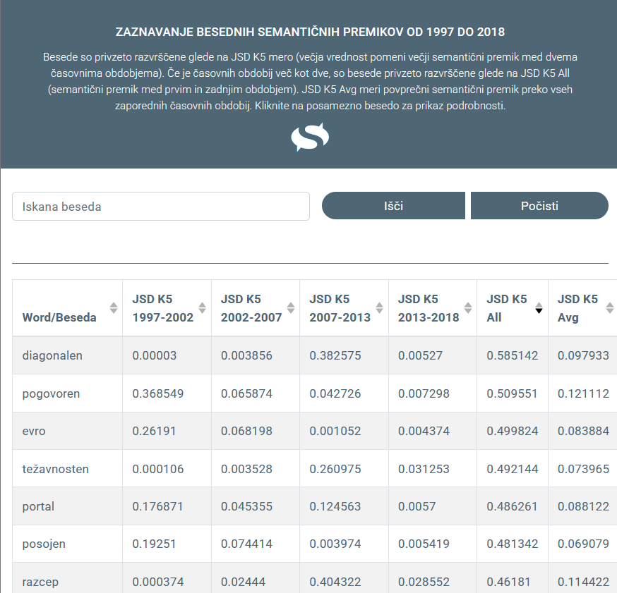
2Do druge komponente uporabniškega vmesnika pridemo tako, da kliknemo na posamezno besedo v tabeli. Ta komponenta nudi podrobnejši prikaz in kontekst sprememb v rabi za posamezno besedo po časovnih obdobjih (Slika 2). Komponenta vizualizira posamična časovna obdobja v stolpcih tako, da z različnimi barvami predstavi distribucijo rab besede v posamičnem obdobju. V legendi slike nam vmesnik nudi tudi hitro interpretacijo gruč s ključnimi besedami in besednimi zvezami, specifičnimi za posamično gručo (predstavljeno v prejšnjem poglavju Interpretacija rezultatov sistema). S klikom na posamezno rabo (tj. barvo, ki predstavlja posamezno gručo) na sliki se nam spodaj izpiše seznam kontekstov (tj. povedi), ki sodijo v to gručo.
3Uporabniški vmesnik je zasnovan tako, da lahko uporabnik z bolj splošnih informacij (na korpusni ravni), ki jih prikazuje prva komponenta, hitro (s pomočjo klika na posamezno besedo) prehaja na podrobnejše informacije (na besedni ravni), ki jih prikazuje druga komponenta, kar omogoča hiter vpogled v spremembe v rabi besede in podpira nadaljnjo analizo teh sprememb. V naslednjem poglavju podrobneje prikažemo, kako je sistem mogoče uporabljati v tem sosledju, in evalviramo rezultat sistema na dva načina. Pri prvem sistem uporabimo za odkrivanje in analizo pomenskih premikov, pri drugem pa za sociolingvistično analizo, kjer vzporejamo spremembe v jezikovni rabi s specifičnimi spremembami v družbi.
4#datoteka Slika2.jpg
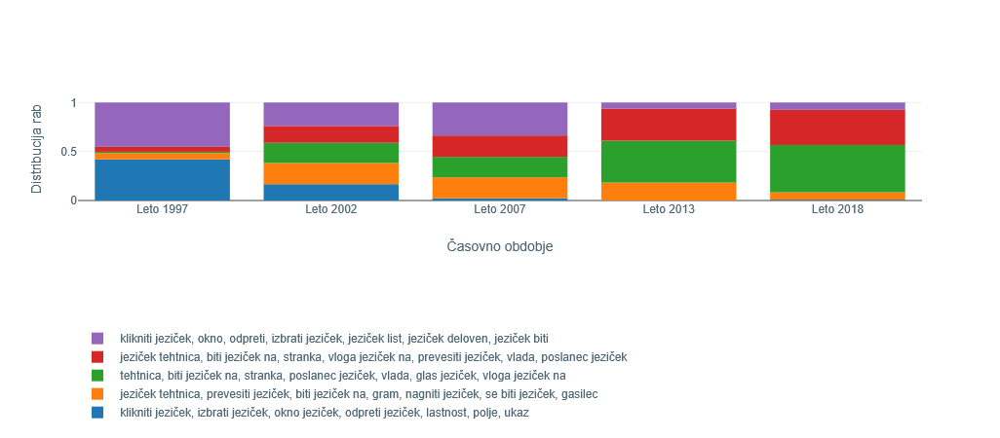
1Za slovenščino smo nevronski model SloBERTa,45 ki smo ga uporabili za ekstrakcijo kontekstualnih besednih vložitev, naučili na delu korpusa Gigafida 2.0.46 Gigafida je referenčni korpus standardne pisane slovenščine in vsebuje besedila iz časopisov (47,8 odstotka besedil), revij (16,5 odstotka), internetnih vsebin (28,0 odstotka),47 stvarnih besedil (3,8 odstotka), leposlovja (3,5 odstotka) in drugih zvrsti.
2#datoteka: Tabela.xlsx, list 1: “Tabela 1”
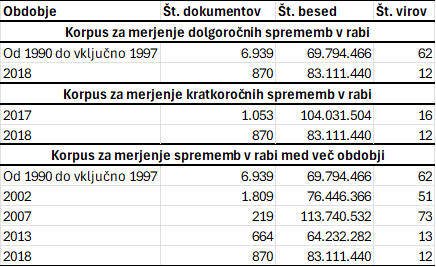
3Da bi lahko analizirali različna obdobja in vrste sprememb v rabi, smo iz besedil, ki jih zajema celotna Gigafida 2.0, sestavili tri korpuse. Prva korpusna različica48 omogoča merjenje dolgoročnih sprememb v rabi med dvema obdobjema. Tu prvo obdobje pokriva osem let med 1990 in 1997 in vsebuje najstarejša besedila v Gigafidi 2.0. Za nekoliko daljši, osemletni razpon smo se odločili predvsem zato, da smo pridobili dovoljšno količino besedil za učenje modela. Drugo obdobje vsebuje besedila iz leta 2018, kar je zadnje leto, zajeto v Gigafidi 2.0. V tem korpusu nas zanimajo predvsem dolgoročne spremembe v rabi besed, ki so nastale v časovnem obdobju, daljšem od 20 let. Drugo različico korpusa49 sestavljajo besedila iz zgolj dveh enoletnih obdobij, nastala v letih 2017 in 2018. V tem korpusu želimo meriti kratkoročne spremembe v rabi besed, ki so nastale v časovnem obdobju enega leta. Tretji korpus50 je za razliko od prvih dveh razdeljen na pet obdobij, in sicer 1990–1997, 2002, 2007, 2013, 2018. S tem korpusom, ki pokriva največ virov in žanrov, želimo meriti spremembe v rabi besed med več zaporednimi obdobji in tako bolje razumeti celotno dinamiko spreminjanja rabe besed, ki ne poteka vedno linearno in v eni smeri. Velikosti posamičnih korpusov glede na število zajetih besedil, besed in virov predstavljamo v Tabeli 1.
1V poglavju analiziramo spremembe v rabi besed v prvi in tretji različici korpusa, tj. korpusa za merjenje dolgoročnih sprememb in korpusa za merjenje sprememb v več zaporednih obdobjih.
1Kot smo že opisali, je korpus za merjenje dolgoročnih sprememb sestavljen na eni strani iz besedil, nastalih v obdobju 1990–1997, in na drugi iz besedil, nastalih v letu 2018. Med prvimi 50 besedami z največ spremembami glede na meroJSD K5 All močno prevladujejo pridevniki (29), sledijo samostalniki (16), medtem ko so glagoli (2) in prislovi (2) manj pogosti. V analizi se glede na pogostost posvetimo prvim trem pridevnikom (diagonalen, stebrn, jonski) in prvim trem samostalnikom (podprogram, portal, izbijanje) na seznamu.
2Glede na mero JSD je v drugem obdobju najbolj drugačna raba pridevnika diagonalen. V obdobju devetdesetih se pojavljata izključno dve gruči pomenov/rab (Slika 3). Analiza povedi v gručah pokaže, da obe gruči vsebujeta mešane rabe besede, tako dobesedne (»diagonalna razpoka«, »diagonalna črta«), metonimične (»diagonalni korak«, »diagonalni bralec«) kot metaforične (»diagonalno zavezništvo«, »diagonalna kumulacija«). V letu 2018 vse te rabe praktično izginejo, prevladuje raba besede v športnih kontekstih. Ta pomen/raba je v sistemu sicer predstavljena v treh različnih gručah, vendar pa gre tako glede na izredno podobne ključne besede kot tudi glede na povedi v teh gručah za zelo podobno rabo. V povedih se namreč raba manifestira v zgolj nekaj besednih zvezah, in sicer se beseda diagonalen pojavlja kot prilastek samostalnikovstrel, udarec, bekhend, forehand, podaja, polvolej, predložek.
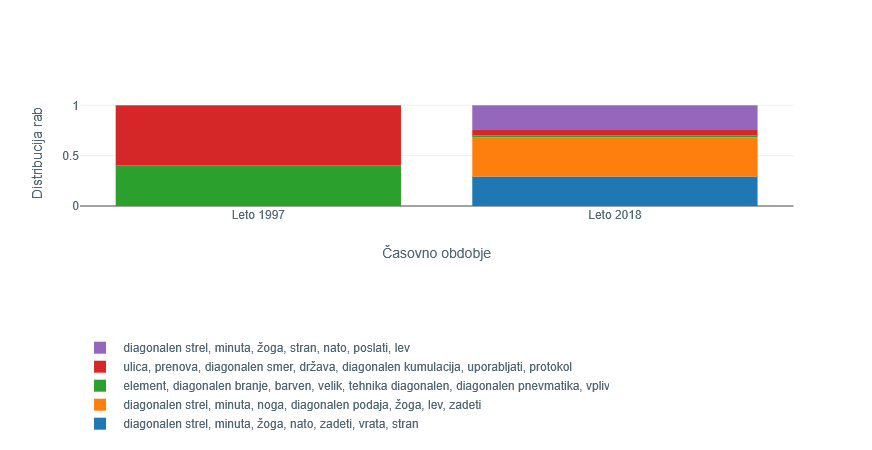
3Druga najbolj spremenjena beseda je pridevnik stebrn. Sistem prikaže, da se je v obdobju do 1997 beseda pojavljala v treh gručah v vijolični, zeleni in modri barvi (Slika 4). Te so okarakterizirane s ključniki, ki med drugim vsebujejo besede miza, podnožje, stoletje, zaključek, vitek, stranica, povezati pa stena, predpostavka, osrednji ter lopa, plečnikov, masiven, odprt, dediščina. Pregled povedi prve in tretje gruče nakazuje rabo besede predvsem v dobesednem pomenu, tj. nanašajoč se na steber kot gradbeni element. Primeri takih sintagem so »stebrno podnožje« (= podnožje iz stebrov), »stebrni okvir« (= okvir iz stebrov), »stebrni obod« (= obod iz stebrov), »stebrna dvorana« (= dvorana s stebri). V drugi gruči rab/pomenov se poleg dobesednih pojavijo tudi metonimične rabe, kot je »stebrni red« (stil stebrov), in metaforične rabe, kot so »stebrna spremljava« (poosebitev), »(tro-)stebrni sistem pokojnin«, »stebrni mit (kulturne industrije)« ali »stebrni plašč«. V letu 2018 se raba popolnoma spremeni. Tu močno prevladujeta gruči, ki se nanašata na pojav t. i. stebrnega udara, nesreče v rudniku, pri kateri pride do zrušitve (varnostnega) stebra. Gre za termin, pri katerem lahko prepoznamo metaforično motiviranost, saj ne gre za steber kot gradbeni element, temveč za hribino, puščeno pri izkopu rudnika, ki je prvemu podobna po svoji podporni funkciji. Glede na kontekste rabe v povedih ugotavljamo, da jih sistem v dve različni gruči najverjetneje razvršča glede na skladenjske lastnosti: medtem ko se v rdeči gruči zveza v veliki večini pojavlja zgolj v imenovalniku, se v oranžni gruči zveza uporablja le v neimenovalniških sklonih.
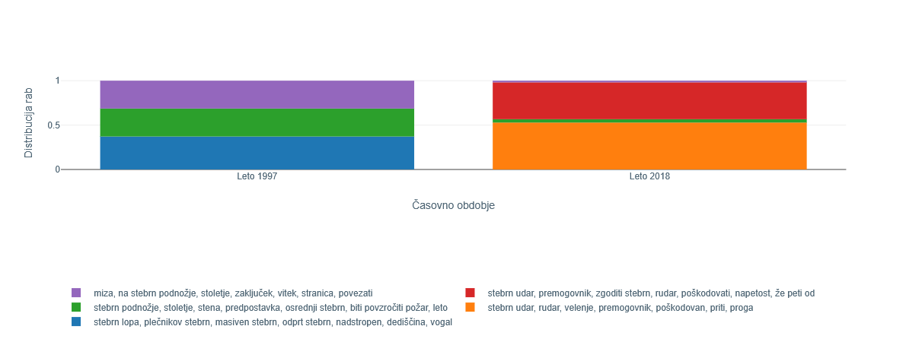
4Tretja beseda po vrsti je pridevnik jonski. V obdobju 1990–1997 se pojavlja v mešanih rabah in kontekstih, ki se nanašajo na Jonce. Povečini gre za metonimično rabo (»jonski tempelj«, »jonska mesta«, »jonska šola«), pojavlja se tudi čisto dobesedna raba (»jonski Grki«, »jonski pomorščaki«). V letu 2018 močno prevladuje zgolj ena vrsta rabe/pomena, kjer se pridevnik ne nanaša na Jonce, temveč na geografsko regijo, pokrajino. Tu gre za rabo besede v zvezah »jadransko jonska (makro)regija«, »jadransko jonska pobuda«, »jadransko jonski koridor«, »jadransko jonska strategija«, ki se v veliki meri pojavljajo v novičarskem žanru in političnem kontekstu. Pojav in porast teh rab je mogoče povezati s specifičnim dogodkom oziroma dogajanjem med obdobjema, in sicer predvsem z oblikovanjem »jadransko-jonske makroregijske strategije« leta 2014 kot združenja držav članic znotraj Evropske unije ter drugih držav v geografski regiji.51
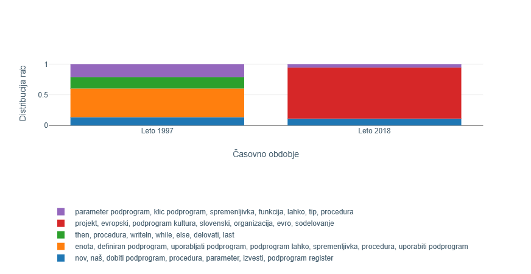
5Prvi samostalnik na seznamu je beseda podprogram. Beseda je precej pogostejša v obdobju devetdesetih let, kjer naj bi se pojavljala v štirih različnih rabah (Slika 5). Te štiri gruče so opredeljene s podobnimi ključniki, med drugim parameter, klic, spremenljivka, funkcija, tip, procedura; then, procedura, writeIn, while, else. Kot dokazujejo tudi konteksti rabe (povedi), se beseda v teh gručah nanaša na računalniški pomen, ki je obeležen v slovarju: 'program v okviru določenega programa, ki se lahko večkrat uporabi v istem ali v drugem programu'. Raba v letu 2018 kaže na pojav in veliko prevlado drugačnega pomena besede, ki ga predstavlja gruča s ključniki projekt, evropski, podprogram kultura, slovenski, organizacija, evro, sodelovanje. Pomena ni mogoče najti v slovarju neposredno pod leksemom podprogram, temveč pod prvim pomenom pomenskega korena besede oziroma pod leksemom program: 'skupek nalog, del, ki se določijo za uresničitev'.52 Primer kaže v prvem obdobju zožitev pomena na specifični računalniški pomen korena program, ki je prav tako edini slovarski pomen, ki sovpada s pojavom interneta, prvim prevodom operacijskega sistema Windows v slovenščino in razvojem drugih informacijsko-komunikacijskih tehnologij v devetdesetih letih.
6Zanimivo je, da je povsem nasproten trend viden pri samostalniku portal na šestem mestu v tabeli. Tu je v obdobju do 1997 mogoče zaznati rabo besede v treh gručah, opredeljenih med drugim s ključniki gotski portal, okno, ohranjen, avtocesta biti; renesančen portal, kamnit portal, pročelje. Le nekaj primerov rabe je za gručo s ključniki spleten, portal, portal lahko, podatek, medij, podjetje, slovenski portal, informacija. Po drugi strani ta in v letu 2018 novonastala gruča s ključniki poročati portal, spleten portal, hrvaški portal, portal siol, navajati portal, pisati portal, novičarski portal močno prevladujeta v drugem obdobju, kjer bolj dobesedna raba iz domene arhitekture, gradbeništva praktično izgine. Zanimivo je, da je arhitekturni pomen 'arhitektonsko poudarjen vhod v stavbo'53 v prvi različici SSKJ še edini pomen, medtem ko se v drugi različici (SSKJ2) že pojavi novi. Pri tem gre za metaforično razširitev etimološko starejšega pomena, ki je v novejši različici slovarja definiran kot 'spletna stran, ki na pregleden način združuje dostop do različnih informacij in storitev'.54 V novi različici je novi pomen (glede na pogostost rabe, zaznane s tem sistemom, povsem upravičeno) že postavljen na prvo mesto.
7Naslednji primer kaže nekoliko manj očitne spremembe v rabi oziroma rabo besede izbijanje v zelo podobnih pomenih in kontekstih. Slovar besedo razlaga zgolj z definicijo »glagolnik od izbijati«,55 medtem ko sistem razločuje štiri gruče rabe. V obdobju 1990–1997 je najpogostejša nevezljiva raba v pomenu 'balinanje', in sicer bodisi samostojno bodisi z levim prilastkom hitrostno, precizno, natančno. V istem obdobju je prisotna, četudi mnogo manj pogosta, raba besede z desnim prilastkom v zvezah »izbijanje žoge«, »izbijanje balina«, »izbijanje ploščka«. V drugem obdobju, tj. v letu 2018, raba v smislu 'balinanja' popolnoma izgine. Poleg že omenjene rabe z desno vezljivostjo sistem v tem obdobju zazna še dve gruči, kjer z analizo primerov ugotovimo, da je beseda izbijanje tu večinoma negativno modificirana: »neuspešno izbijanje«, »poskus izbijanja (žoge)«, »po slabem izbijanju«. Sistem v tem primeru rabo razločuje na podlagi resnično subtilnih razlik, ki jih ni mogoče ugotoviti brez vpogleda v kontekst rabe.
1Primer uporabniškega vmesnika za vhodni korpus, sestavljen iz petih zaporednih časovnih obdobij, smo že prikazali na Sliki 1. Besede so privzeto razvrščene po meri JSD K5 All, ki meri razliko med distribucijama v rabi besede med prvim in zadnjim obdobjem v korpusu (angl. beseda »All« označuje, da gre za spremembo v rabi besede od prvega do zadnjega obdobja).56
2Glede na ta kriterij se je, tako kot v prejšnjem poglavju, najbolj spremenila distribucija rab besede diagonalen. S pomočjo vrednosti v drugih stolpcih, ki prikazujejo spremembe med zaporednimi obdobji, opazimo, da je k spremembi na dolgi rok najbolj vplival prehod med obdobjema 2007 in 2013 (vrednost JSD je približno 0,38). Podobno kot v primerjavi rabe v obdobjih 1990–97 in 2018 iz prejšnjega poglavja gre pri tej zaznani spremembi predvsem za zožitev konteksta. Iz splošne rabe v zvezah »diagonalni korak«, »diagonalna črta«, »diagonalna razdalja«, kjer beseda modificira različne samostalnike, se raba v letu 2013 prevesi v praktično izključno (nogometni) športni kontekst, ki ga nakazujejo zveze »diagonalni strel«, »diagonalni predložek«, »diagonalna podaja«.
3Drugi pridevnik, ki ga obravnavamo, je beseda pogovoren, katere največjo spremembo je sistem zaznal s prehodom med obdobjema 1990–97 in 2002. Podobno kot pri besedi podprogram iz prejšnjega poglavja lahko s pomočjo prikaza na Sliki 6 v prvem obdobju opazimo veliko prevlado gruče (več kot 80 odstotkov), ki predstavlja rabo v računalniškem kontekstu s ključnimi izrazi klikniti, gumb, pogovorno okno, slika. Po drugi strani se v naslednjem obdobju, tj. v letu 2002, raba besede ponovno posploši, saj je skoraj enakomerno razdeljena med vsemi petimi zaznanimi gručami. Pojavlja se v različnih zvezah, kot so »pogovorni jezik«, »pogovorna oddaja«, »pogovorni šov«, »pogovorna slovenščina«, »pogovorno okno«.
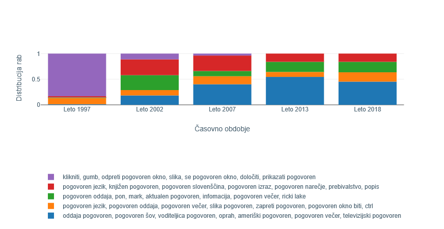
4Še en pridevnik na seznamu je beseda težavnosten. Sistem največjo spremembo v rabi zazna med obdobjema 2007 in 2013. Pri tem je najvidnejši upad dveh gruč, ki ju zaznamujejo na primer težavnostna stopnja, godba, vzpon, zahteven, proga in težavnostna stopnja, težavnostna skupina, vaja, težavnostni izpit. Iz primerov rabe ugotovimo, da v obeh prevladuje predvsem zveza »težavnostna stopnja«, pojavi se še ob besedah skupina, razred, sezona, kategorija, nivo. Fraze so umeščene v raznovrstne kontekste, denimo športni (»kolesarski izleti različnih težavnostnih stopenj«), umetniški (»godbe v prvi težavnostni stopnji«), zdravstveni (»težavnostna stopnja jecljanja«), šolski, igričarski idr. V sledečem obdobju pa se poveča raba v gruči, ki jo zaznamujejo težavnostno plezanje, težavnostni pokal, plezalka, sezona, Janja Garnbret. Povedi gruče potrjujejo, da se pridevnik tu pojavlja izključno v kontekstu »težavnostnega plezanja«, tj. je prišlo v letu 2018 do izrazite zožitve rabe. Predvidevamo, da je prevlada gruče posledica predvsem medijskega poročanja o uspehih specifične slovenske plezalke, ki je pozornost prvič pritegnila z nastopom na svetovnem prvenstvu leta 2016.57
5Prvi samostalnik med najbolj spremenjenimi besedami je evro na tretjem mestu v tabeli. Zanimivo je, da je največja sprememba po meri JSD zaznana med obdobjema 1990–97 in 2002 (in ne na primer na pragu leta 2007, ko je Slovenija uvedla valuto). V obdobju devetdesetih let se izmenjujeta dve gruči, opredeljeni s ključniki območje evra, indeks, eurostoxx, uvedba evra, tečaj evra, evropska centralna banka ter evropska borza, cena nafte, neenotno, valutni trg. Ključni izrazi in primeri rabe kažejo, da se beseda evro v teh gručah uporablja v bolj generičnem, abstraktnem kontekstu pomena 'denarna enota'. Konteksti vključujejo napovedi vzpostavljanja »evro območja« in načrte vpeljave nove valute. V letu 2002, ko valuta dejansko že zamenja lokalne valute, se pojavi konkretnejša raba besede v bolj specifičnih kontekstih (»500 evrov, »100 evrov«, »milijon evrov«).
6Drugo mesto med najbolj spremenjenimi samostalniki, kot pri dolgoročnih spremembah, tudi v tem razseku korpusa zaseda beseda portal. Glede na različnost distribucij se je največja sprememba v rabi zgodila med obdobjema 1997 in 2002, kjer je opaziti najvidnejši upad v konkretni rabi, tj. v pomenu gradbenega elementa. V prvem obdobju namreč ta raba predstavlja veliko večino (73 odstotkov) primerov, v letu 2002 pa že pade na manj kot 18 odstotkov. Vse večji upad rabe po posamičnih obdobjih lahko spremljamo na Sliki 7.
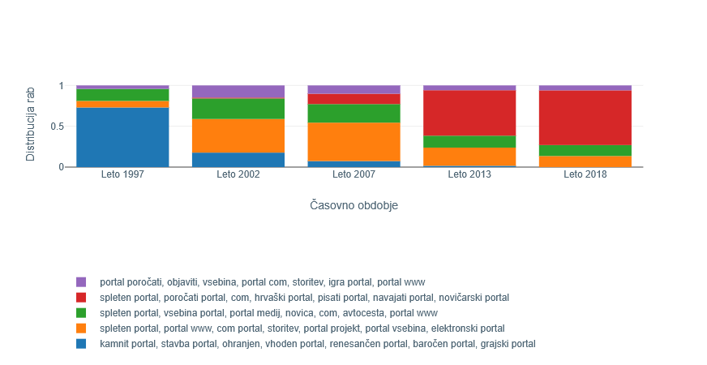
7Tretji samostalnik, ki odraža največ sprememb v zaporednih obdobjih glede na skupni seštevek, je razcep (Slika 8). Največ prispeva primerjava obdobij 2007 in 2013. V prvih treh obdobjih je raba skoraj enakomerno razporejena med tri prevladujoče gruče, in sicer vijolično s ključnimi izrazi razcep stranke, nevtron, politični razcep, notranji razcep, razcep jedra, modro z izrazi razcep stranke, politični razcep, povzročiti razcep, vladen, telo, slovenski razcep in zeleno z izrazi razcep ceste, razcep levo, obvoznica, zaprt razcep. Četudi ključni izrazi v prvih dveh gručah nakazujejo rabo le v političnem in fizikalnem kontekstu, primeri uporabe pokažejo zelo raznovrstno metaforično rabo: »notranji razcep« (osebe), »razcep na levo ali desno«, »verski razcep«, »razcep med demokrati«, »razcep med človekom in svetom«, »generacijski razcep«, »razcep med umom in telesom«, »razcep na dve identiteti«. Modra gruča vsebuje tudi nekaj primerov, kjer so razvidne bolj fizikalne in konkretne rabe: »razcep jeder«, »jedrni razcep«. Razlika med prvo in drugo gručo je videti zgolj skladenjske narave, v primerih rabe iz modre gruče se razcep pojavlja le v imenovalniku. Tretja oziroma zelena gruča zaznamuje rabo v slovarskem pomenu 'vsaka od cest, prog, ki nastane z razcepitvijo ceste, proge'.58 V zadnjih dveh obdobjih, tj. 2013 in 2018, pa se te rabe skoraj popolnoma umaknejo, v korpusu prevladujeta rdeča in oranžna gruča. Konteksti rabe vsebujejo enake ali vsebinsko zelo podobne izraze cesta, ljubljana, prometno, priključek, obvoznica, promet, zastoj. Po ključnih besedah se tematika rabe ujema z zeleno gručo. Iz primerjave povedi teh treh »cestnih« gruč pa ugotavljamo, da sistem ni razločil pomenskih, temveč žanrske in stilistične razlike. Za zeleno je namreč značilna bolj pripovedna, mestoma subjektivna raba, za oranžno in rdečo pa obvestilna raba s suhoparnim, objektivnim slogom.
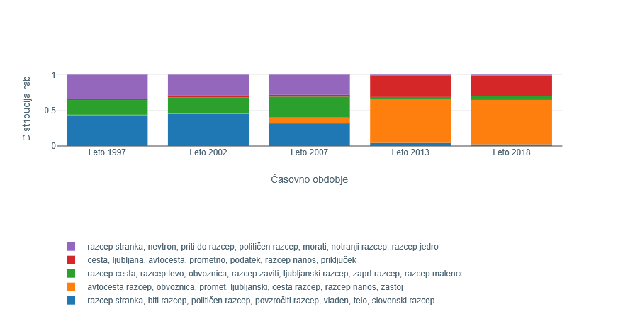
1V prejšnjih poglavjih smo pokazali, da lahko sistem uporabimo za analizo sprememb v rabi besed v različnih obdobjih. Meje med obdobji so bile določene glede na razpoložljive podatke, korpus Gigafida 2.0 smo razdelili na dve in pet obdobij, da smo preverili, kako uspešen je sistem pri zaznavanju dolgoročnih sprememb in sprememb v več zaporednih obdobjih.
2V tem poglavju nas po drugi strani zanima, kako so specifični dogodki, teroristični napad v ZDA 11. septembra 2001 in obdobje »begunske krize« oziroma »dolgega poletja migracij« (2015–2016), vplivali na reprezentacijo fenomena migracij v slovenski družbi. V ta namen smo korpus Gigafida razdelili na pet jasno zamejenih obdobij:59
3Sestava podkorpusov je navedena v Tabeli 2.
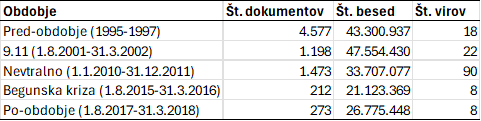
4Med besedami, ki so spremenile rabo med temi petimi obdobji, obravnavamo dva specifična primera, burka in pritok.
5Besedi burka in pritok smo za analizo izbrali glede na povezanost s tematiko migracij. Med višje uvrščenimi besedami glede na spremembo rabe je bila vrsta besed, ki odražajo splošnejšo spremembo rabe (npr. severnomorski, rafiniran, evro), nas pa je zanimala specifika jezika v zvezi s pojavom migracij. Slika 9 ponazori spremembo v rabi besede burka. V obdobju pred napadi v ZDA 11. septembra 2001 je razumevanje besede povezano predvsem s pomenoma 'norčavo vedenje ali govorjenje' ter 'dramsko delo s šaljivo, včasih grobo vsebino, komiko'.60 Raba besede v pomenu muslimanskega ženskega oblačila v petih obravnavanih obdobjih narašča in je najpogostejša v zadnjem obdobju (2017–2018). Treba je poudariti, da gre tu v resnici za dve izvorno različni besedi: eno je burka iz družine burkež, burkati ipd., druga je burqa – žensko muslimansko oblačilo. Tu torej povečana raba besede burka v določenem časovnem obdobju ni odraz pomenskega premika, pač pa posledica prevzema besedne oblike (burqua) iz tujega jezika, ki sovpada (homograf) z v jeziku že obstoječo besedo. Vstop besede burqa v prostor prej obstoječe besede burka je v tem primeru sociolingvistično pogojen, dejstvo, da sistem zaznava ta prevzem prostora, pa pokaže, da je sistem mogoče uporabiti tudi za sociološko analizo.
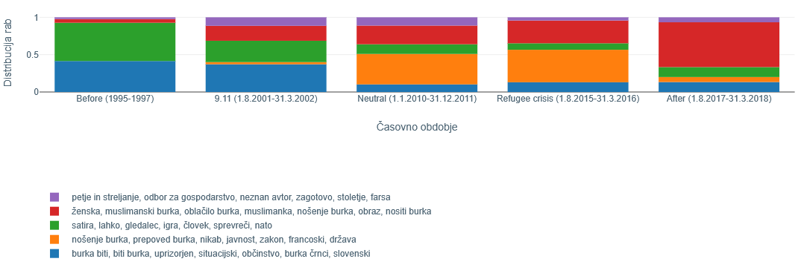
Vir: lastno delo6Uporaba besede burka v smislu ženskega oblačila začne naraščati takoj po zrušenju dvojčkov WTC v ZDA in postane prevladujoča v času razprave o prepovedi nošenja burke oziroma nikaba v javnosti, ki je tudi v Sloveniji potekala predvsem v smislu, ali naj se na ravni države to zakonsko prepove (kot denimo velja v Franciji vse od leta 2011). Ta vidik je bil pričakovano najbolj izpostavljen v obdobju po napadu na ZDA, ki mu je sledila napoved t. i. vojne proti terorizmu (angl. the war on terror), ter v času t. i. begunske krize, ko je ozemlje Slovenije kot ene od držav na zahodnobalkanski migracijski poti v obdobju 2015–2016 prečkalo 400.000 beguncev, za katere se je predvidevalo, da so muslimanske veroizpovedi. Prvotni humanitarni vladni odziv je zamenjala kriminalizacija migracij. Po podatkih Eurobarometra je odstotek anketirancev, ki so navajali priseljevanje kot ključno vprašanje, s katerim se sooča EU, s 25 odstotkov leta 2014 narastel na skoraj 40 odstotkov v letu 2015, priseljevanje ljudi iz držav zunaj EU pa je vzbujalo negativne občutke kar pri 56 odstotkih vprašanih.61 V Sloveniji se je širil protibegunski in protipriseljenski sovražni govor, v javnem diskurzu pa je tema migracij postajala vse bolj žgoča in polarizirajoča.62 Najobsežnejša pa je uporaba besede burka v smislu ženskega oblačila v obdobju po ključnih dveh časovnih točkah v poobdobju, kar sovpada z globalnim porastom razprave o migracijah kot problemu, predvsem zaradi domnevne nezdružljivosti islama z zahodno oziroma evropsko (in slovensko) kulturo.63 V zadnjem obdobju tako pri rabi besede prevladuje vidik spola, razprava pa se osredotoči na muslimansko žensko.64
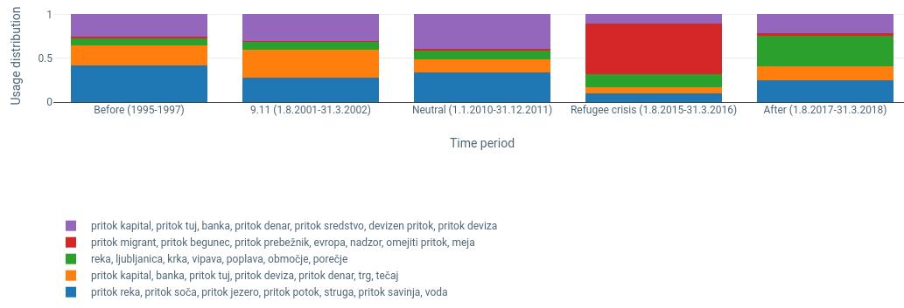
7Zanimiva je tudi sprememba v rabi besede pritok (Slika 10). Od prevladujoče povezave pritoka z vodo (»pritok reke«) v drugi polovici devetdesetih let, ki kaže dobesedno rabo v osnovnem pomenu besede, se v drugem (in tudi tretjem) obdobju kaže metaforični pomen z navezavo na denar, banke in devize (npr. »pritok kapitala«). Očiten porast v rabi v povezavi z migracijami je videti v obdobju »begunske krize« z rabo besede v zvezah »pritok migrantov/beguncev/prebežnikov«. V tem obdobju je sprememba v rabi povezana s političnim dogajanjem v Evropi, kjer v ospredje preide problematika omejevanja in upravljanja migracij ter preprečevanje vstopa beguncem, kar potrjujejo vse obstoječe raziskave medijskega poročanja (gl. npr. Pajnik 201765). Nezaupanje do muslimanskih beguncev, ki naj bi kot neustavljiv »val« ali »reka« (tj. pritok) pritiskali na EU, je razširjeno po vsej Evropi in se povezuje z marginalizacijo muslimanskih priseljencev. Protibegunski diskurz v analiziranem obdobju se torej zaradi prevlade ali domnev o prevladi »izvora« prišlekov iz islamskih držav prepleta s predobstoječimi predsodki do islama in endemičnimi protimuslimanskimi stališči. V poobdobju tega več ni, se pa spet okrepi povezava z vodo in rekami.
1V članku smo predstavili prvi spletni sistem za zaznavanje sprememb v rabi besed v slovenščini. Pri tem smo podrobneje osvetlili njegovo tehnično zasnovo, metodo za zaznavanje besed in enostavno dostopen uporabniški vmesnik. Ta v enem koraku omogoča hiter pregled največjih sprememb v rabi na ravni celotnega korpusa, v drugem koraku pa podrobnejšo analizo na ravni posamezne besede.
2Sistem smo nato uporabili in evalvirali s pomočjo jezikoslovne in sociolingvistične analize. V prvi smo podrobneje interpretirali rezultate sistema z vpogledom v pridevnike in samostalnike, katerih raba naj bi se najbolj spremenila. Pri tem smo gruče analizirali na ravni ključnih izrazov in dejanskih primerov rabe, ki jih prikaže sistem. Tako gruče kot dejanske rabe smo skušali kategorizirati v različne kategorije pomena in pomenskih premikov (dobesedni/osnovni, metaforični, metonimični) in tudi vzporejati s slovarskimi pomeni, obeleženimi v Slovarju slovenskega knjižnega jezika. Analiza je pokazala, da je sistem uporaben za odkrivanje različnih rab v širšem smislu, vendar pa same gruče večinoma ne ustrezajo zgolj semantiki, tj. pomenski plati posamičnih besed. Sistem v veliko primerih prikaže več gruč pogostih rab, kot jih dejansko obstaja, torej več, kot je pomenov v slovarju ali v rabi. Problem izhaja iz narave vektorskih vložitev, ki poleg semantične plati besed ujamejo tudi skladenjske in morfološke lastnosti besed pa tudi druge globalne vzorce, ki jih je mogoče zaznati v širšem kontekstu (v jeziku ponavljajoči se vzorci, kot so na primer stereotipi). Zaradi tega sistem v veliko primerih ustvari več gruč, ki pokrivajo semantično enako rabo oziroma isti leksikalni pomen besede, v različne gruče pa je ta pomensko enaka raba uvrščena zaradi nepomenskih razlik, kot je morfologija, skladnja, slog ali dolžina povedi ipd. Velja tudi obratno, tj. da ena gruča združuje sicer različne pomene s površinsko podobno rabo besede. Večje število gruč, kot je dejanskih rab, izhaja tudi iz metode gručenja, pri kateri je število gruč vnaprej določeno.
3Druga omejitev sistema izhaja iz uporabljenih podatkov. O stanju slovenskega (standardnega) jezika in rabi sodimo glede na njegovo reprezentacijo v korpusu Gigafida. Četudi naj bi bil kot referenčni korpus slovenščine karseda reprezentativen in uravnotežen vir, je povsem mogoče, da na (navidezne) spremembe v rabi določenih besed vplivajo predvsem razlike v sestavi virov posameznih časovnih podkorpusov. Pri interpretaciji rezultatov, ki jih poda sistem, velja ohraniti previdnost, saj morda že sam korpus ne prikazuje ustrezne jezikovni realnosti.
4V prihodnje načrtujemo uporabo sistema na novejših besedilnih korpusih v slovenščini, ki vsebujejo podatke o rabi besed po letu 2018. V načrtu so tudi raziskave sprememb v rabi besed za specifične primere in dogodke (npr. kako je na evolucijo raznovrstnih konceptov, nova poimenovanja in pomenske prenose vplivala pandemija covida, ki je glede na raziskave imela odločilen vpliv na evolucijo medijskega poročanja66). Prav tako bomo preizkusili nove metode za zaznavanje in interpretacijo sprememb v rabi besed in s tem poskušali izboljšati delovanje sistema, na primer z uporabo drugega algoritma za gručenje ali bolj informirane metrike za merjenje sprememb v distribuciji rab. Nenazadnje pa se bomo osredotočili tudi na metode za odkrivanje skupine besed in konceptov, ki izražajo podobne spremembe v rabi – denimo iskanje besed, ki kažejo razširitve pomena specifično prek metafor, ali odkrivanje konceptov in semantičnih polj, ki kažejo največjo raznolikost pomenov.
1Delo je bilo izvedeno v okviru projekta RSDO (Razvoj slovenščine v digitalnem okolju), ki sta ga financirala Ministrstvo za kulturo Republike Slovenije in Evropski sklad za regionalni razvoj, ter v okviru programov in projektov Javne agencije za znanstvenoraziskovalno in inovacijsko dejavnost Republike Slovenije (ARIS): Sovražni govor v sodobnih konceptualizacijah nacionalizma, rasizma, spola in migracij (J5-3102), Tehnike vektorskih vložitev za medijske aplikacije (L2-50070), Veliki jezikovni modeli za digitalno humanistiko (GC-0002), Računalniško podprta večjezična analiza novičarskega diskurza s kontekstualnimi besednimi vložitvami (J6-2581), Tehnologije znanja (P2-0103), Slovenski jezik - bazične, kontrastivne in aplikativne raziskave (P6-0215) in Enakost in človekove pravice v dobi globalnega vladovanja (P5-0413).
Mojca Brglez
Veronika Bajt
Senja Pollak
Špela Rot
Matej Martinc
1In this article, we present the first online system for detecting changes in Slovene word usage. We provide an in-depth overview of its technical design, the method for detecting words, and its user-friendly interface. The system provides a quick and concise general overview of the most significant usage changes across the entire corpus, while also allowing for a more detailed analysis at the level of individual words.
2We demonstrate the application of the system on a Slovene reference corpus, delimited into different combinations of temporal slices, and evaluate the system through its use for linguistic and sociolinguistic analysis. In the linguistic analysis, we closely examine the results of the system, focusing on the most altered adjectives and nouns. We analyse clusters at the level of key terms and real usage examples. Both the clusters and actual usage patterns are categorised into various semantic and usage-shift categories (basic/literal/ordinary, metaphorical, metonymic, broadening, narrowing) and compared with dictionary definitions. Our analysis concludes that the system is effective in detecting various usage patterns in a broad sense. However, the clusters generated do not always correspond strictly to semantic aspects, i.e., the senses of individual words. In many cases, the system identifies more clusters than actually exist in real use – more than the number of meanings recorded in dictionaries or observable in discourse.
3On the one hand, this issue arises from the nature of vector embeddings, which capture not only the semantic aspects of words but also their syntactic and morphological properties, as well as other global patterns detectable in a broader linguistic context (e.g., recurring patterns in language, such as stereotypes). As a result, the system often generates multiple clusters that, in fact, represent the same semantic usage or lexical meaning. Conversely, some clusters combine distinct meanings due to their surface-level similarity in usage. Furthermore, the system sometimes classifies meaning-equivalent usages into different clusters based on non-semantic factors, such as morphology, syntax, style, or simply sentence length. On the other hand, the tendency to generate more clusters than would be observed in actual usage is also influenced by the clustering method itself, as the number of clusters is predetermined. A second limitation of the system stems from the dataset itself. Our insights into the state of the Slovenian (standard) language and its usage are based on its representation in the Gigafida corpus. Although this corpus is designed to be as representative and balanced a resource as possible for Slovenian, it is entirely possible that (apparent) changes in word usage are primarily influenced by differences in the composition of sources across different time-based subcorpora. Therefore, when interpreting the system’s results, caution is advised, as the corpus itself may not accurately reflect linguistic reality.
* Asist., Filozofska fakulteta Univerze v Ljubljani, Aškerčeva cesta 2, Ljubljana; Institut »Jožef Stefan«, Jamova cesta 39, Ljubljana, mojca.brglez@ff.uni-lj.si; ORCID: 0000-0002-8806-0942
♦ Dr., znan. sod., Mirovni inštitut, Metelkova 6, Ljubljana, veronika.bajt@mirovni-institut.si; ORCID: 0000-0002-6917-3255
° Doc. dr., Institut »Jožef Stefan«, Jamova cesta 39, Ljubljana, senja.pollak@ijs.si; ORCID: 0000-0002-4380-0863
• Filozofska fakulteta Univerze v Ljubljani, Aškerčeva cesta 2, Ljubljana
♠ Asist. dr., Institut »Jožef Stefan«, Jamova cesta 39, Ljubljana, matej.martinc@ijs.si: ORCID: 0000-0002-7384-8112
1. Jean Aitchison, Language change: Progress or decay? (Cambridge University Press, 2001), 133–83.
2. Nina Tahmasebi, Lars Borin, Adam Jatowt et al., ur., Computational approaches to semantic change (Language Science Press, 2021), https://doi.org/10.5281/zenodo.5040241.
3. Nabeel Gillani in Roger Levy, »Simple dynamic word embeddings for mapping perceptions in the public sphere,« v: Proceedings of the third workshop on natural language processing and computational social science (2019), 94–99, https://doi.org/10.18653/v1/W19-2111. Polona Gantar, Špela Arhar Holdt in Senja Pollak, »Leksikalne novosti v besedilih računalniško posredovane komunikacije,« Slavistična revija 66, št. 4 (2018): 459–72.
4. George Lakoff in Johnson, Mark, Metaphors We Live By (University of Chicago Press, 1980).
5. Eve Sweetser, From Etymology to Pragmatics: Metaphorical and Cultural Aspects of Semantic Structure (Cambridge University Press, 1990).
6. Syrielle Montariol, Matej Martinc, Lidia Pivovarova et al., »Scalable and interpretable semantic change detection,« v: Proceedings of the 2021 Conference of the North American Chapter of the Association for Computational Linguistics: Human Language Technologies (Association for Computational Linguistis, 2021), 4642–52.
7. Martin Hilpert in Stefan Th. Gries, »Assessing frequency changes in multistage diachronic corpora: Applications for historical corpus linguistics and the study of language acquisition,« v: Literary and Linguistic Computing 24, št. 4 (2009): 385–401, https://doi.org/10.1093/llc/fqn012. Patrick Juola, »The time course of language change,« Computers and the Humanities 37, št. 1 (2003): 77–96, https://doi.org/ 10.1023/A:1021839220474.
8. Zellig S. Harris, »Distributional Structure,« WORD 10, št. 2-3 (1954): 146–62.
9. Med drugimi je bila v letu 2020 organizirana delavnica SemEval-2020 Task 1: Unsupervised lexical semantic change detection za zaznavanje sprememb v rabi besed za angleščino, nemščino, švedščino in latinščino, v letu 2022 pa LSCDiscovery: A shared task on semantic change discovery and detection in Spanish za španščino.
10. Matej Martinc, Veronika Bajt, Špela Rot et al., »Sistem za zaznavanje sprememb v rabi besed in njegova uporaba za sociolingvistično analizo,« v: Zbornik konference Jezikovne tehnologije in digitalna humanistika 2024 (Inštitut za novejšo zgodovino, 2024), 298–318, https://doi.org/10.5281/zenodo.13936410.
11. Uporabniški vmesnik je javno dostopen na spletnem naslovu http://kt-nlp-demo.ijs.si:8080.
12. Yuting Wei, Meiling Li, Yangfu Zhu, Yuanxing Xu, Yuqing Li in Bin Wu, »A diachronic language model for long-time span classical Chinese,« Information Processing & Management 62, št 1 (2025), 103925, https://doi.org/10.1016/j.ipm.2024.103925.
13. Marco Del Tredici, Malvina Nissim in Andrea Zaninello, »Tracing metaphors in time through self-distance in vector spaces,« v: Proceedings of the Third Italian Conference on Computational Linguistics CLiC-It 2016, Accademia University Press, 2016, 117–22, https://doi.org/10.4000/books.aaccademia.1760.
14. Quirin Würschinger in Barbara McGillivray, »Semantic change and socio-semantic variation: the case of COVID-related neologisms on Reddit,« Linguistics Vanguard (2024), https://doi.org/10.1515/lingvan-2023-0106.
15. Isabelle Gribomont, »From Diachronic to Contextual Lexical Semantic Change: Introducing Semantic Difference Keywords (SDKs) for Discourse Studies,« v: Proceedings of the 4th Workshop on Computational Approaches to Historical Language Change, Association for Computational Linguistics, 2023, 153–60. Matej Martinc, Nina Perger, Andraž, Pelicon, Matej Ulčar, Andreja Vezovni in Senja Pollak, »EMBEDDIA hackathon report: Automatic sentiment and viewpoint analysis of Slovenian news corpus on the topic of LGBTIQ+,« v: Proceedings of the EACL Hackashop on news media content analysis and automated report generation (2021), 121–26.
16. Hilpert in Gries, »Assessing frequency changes.« Juola, »The time course.«
17. Nina Tahmasebi, Lars Borin in Adam Jatowt, »Survey of computational approaches to lexical semantic change detection,« v: Tahmasebi et al., ur., Computational approaches to semantic change, Language Science Press, 2021, 1–91, https://doi.org/10.5281/zenodo.5040302.
18. Harris, »Distributional Structure.«
19. Tomas Mikolov, Ilya Sutskever, Kai Chen et al., »Distributed representations of words and phrases and their compositionality,« v: Advances in neural information processing systems 26 (2013): 3111–19.
20. Eden bolj znanih primerov izračuna semantične analogije je moški – kralj + ženska = x, pri čemer je rezultatu x najbližje vložitev besede kraljica.
21. Jacob Devlin, Ming-Wei Chang, Kenton Lee et al., »BERT: Pre-training of deep bidirectional transformers for language understanding,« v: Proceedings of the 2019 conference of the North American chapter of the Association for computational linguistics: Human language technologies, Volume 1 (Long and Short Papers) (ACL, 2019): 4171–86.
22. Yoon Kim, Yi-I Chiu, Kentaro Hanaki et al., »Temporal analysis of language through neural language models,« v:Proceedings of the ACL 2014 Workshop on language technologies and computational social science (2014): 61–65. William L. Hamilton, Jure Leskovec in Dan Jurafsky, »Diachronic word embeddings reveal statistical laws of semantic change,« v: Proceedings of the 54th annual meeting of the Association for computational linguistics (ACL, 2016): 1489–501.
23. Matej Martinc, Petra Kralj Novak in Senja Pollak, »Leveraging contextual embeddings for detecting diachronic semantic shift,« v: Proceedings of the Twelfth Language Resources and Evaluation Conference (EACL, 2020): 4811–19.
24. Andrey Kutuzov in Mario Giulianelli, »UiO-UvA at SemEval-2020 task 1: Contextualised embeddings for lexical semantic change detection,« v: Proceedings of the fourteenth workshop on semantic evaluation (International Committee for Computational Linguistics, 2020), 126–34.
25. Montariol et al., »Scalable and interpretable.« Matej Martinc, Syrielle Montariol, Elaine Zosa et al., »Capturing evolution in word usage: Just add more clusters?,« v: Companion proceedings of the web conference 2020 (Association for Computing Machinery, 2020), 343–49, https://doi.org/10.1145/3366424.3382186. Mario Giulianelli, Marco Del Tredici in Raquel Fernández, »Analysing lexical semantic change with contextualised word representation,« v: Proceedings of the 58th Annual Meeting of the Association for Computational Linguistics (ACL, 2020): 3960–73.
26. Jianhua Lin, »Divergence measures based on the Shannon entropy,«IEEE Transactions on Information theory 37, št. 1 (1991): 145–51.
27. Giulianelli et al., »Analysing lexical semantic change.«
28. Martinc et al., »Capturing evolution in word usage.«
29. Montariol et al., »Scalable and interpretable.«
30. Ada Vidovič Muha, Slovensko leksikalno pomenoslovje: govorica slovarja (Znanstveni inštitut Filozofske fakultete, 2000). Jerica Snoj, »Slovarska večpomenskost in Slovensko leksikalno pomenoslovje,« Slavistična Revija 51, št. 4 (2003): 387–409.
31. Gantar et al., »Leksikalne novosti.«
32. Tomaž Erjavec, Nikola Ljubešić in Darja Fišer, »Korpus slovenskih spletnih uporabniških vsebin Janes,« v: Darja Fišer, ur., Viri, orodja in metode za analizo spletne slovenščine (Ljubljana: Znanstvena založba Filozofske fakultete Univerze v Ljubljani, 2018), 16–43.
33. Darja Fišer in Nikola Ljubešić, »Tviti kot leksikografski vir za analizo pomenskih premikov v slovenščini,« v: Darja Fišer, ur., Viri, orodja in metode za analizo spletne slovenščine (Ljubljana: Znanstvena založba Filozofske fakultete, 2018), 198–226.
34. Marko Pranjić, Kaja Dobrovoljc, Senja Pollak et al., »Semantic change detection for Slovene language: a novel dataset and an approach based on optimal transport,« arXiv:2402.16596 (arXiv preprint, 2024), https://doi.org/10.48550/arXiv.2402.16596.
35. Matej Martinc, Nina Perger in Senja Pollak, »Viewpoint detection on LGBT+ reporting using contextual embeddings and qualitative thematic analysis: The use case on the word deep,« Bulletin of Sociological Methodology/Bulletin de Méthodologie Sociologique (2025): 07591063251317085.
36. Montariol et al., »Scalable and interpretable.«
37. Ibidem.
38. Nikola Ljubešić, Luka Terčon in Katja Dobrovoljc, »CLASSLA-Stanza: The Next Step for Linguistic Processing of South Slavic Languages,« v: Špela Arhar Holdt in Tomaž Erjavec, ur., Zbornik konference za jezikovne tehnologije in digitalno humanistiko (JT-DH-2024) (Ljubljana: Inštitut za novejšo zgodovino, 2024), 251–74, https://doi.org/10.5281/zenodo.13936406.
39. Gre za podbesedne enote (angl. subword token), ki ne ustrezajo nujno pojavnicam ali besedam, saj je lahko ena pojavnica razdeljena na več žetonov.
40. Kadar pojavnico sestavlja več žetonov, njeno reprezentacijo izračunamo iz povprečja vložitev žetonov, ki jo sestavljajo.
41. María L. Menéndez, Julio A. Pardo, Leandro Pardo in María C. Pardo, »The Jensen-Shannon divergence,« Journal of the Franklin Institute 334, št. 2 (1997): 307–18, https://doi.org/10.1016/S0016-0032(96)00063-4.
42. Primeri takih razločevalnih nizov so vidni na Sliki 2, prvo gručo tako označujeta mdr. unigram okno ter bigram klikniti jeziček.
43. Uporabljata se tudi izraza »pomensko prazne« ali »blokirane« besede, ki običajno vključujejo nepolnopomenske besedne vrste in/ali zelo pogoste besede. V predstavljenem eksperimentu smo uporabili seznam 1071 besed, izluščenih iz korpusa Kres, torej korpusa standardne slovenščine. Na seznam so uvrščeni predlogi, vezniki, členki in zaimki. Seznam vsebuje različnice, ne samo lem.
44. Vmesniki so prosto dostopni na naslovu http://kt-nlp-demo.ijs.si:8080.
45. Matej Ulčar in Marko Robnik Šikonja, »SloBERTa: Slovene monolingual large pretrained masked language model,« v: Zbornik 24. mednarodne multikonference Informacijska družba IS 2021, zvezek C (Ljubljana: Institut »Jožef Stefan«, 2021), 17–20.
46. Simon Krek, Špela Arhar Holdt, Tomaž Erjavec et al., »Gigafida 2.0: the reference corpus of written standard Slovene,« v: Proceedings of the 12th Language Resources and Evaluation Conference (ELRA, 2020): 3340–45.
47. Internetna besedila vsebujejo tudi novice iz novičarskih portalov, ki so po vsebini zelo podobne časopisnim besedilom.
48. Sistem na podlagi dveh podkorpusov je na voljo na (E8-NLP) http://kt-nlp-demo.ijs.si:8080/semanticshifttable/2.
49. Sistem na podlagi dveh letnih podkorpusov je dostopen na (E8-NLP) http://kt-nlp-demo.ijs.si:8080/semanticshifttable/3.
50. Sistem na podlagi petih podkorpusov je dostopen na (E8-NLP) http://kt-nlp-demo.ijs.si:8080/semanticshifttable/1.
51. Evropska komisija, »EU Strategy for the Adriatic and Ionian Region,« https://ec.europa.eu/regional_policy/policy/cooperation/macro-regional-strategies/adriatic-ionian_en, dostop 15. 4. 2025.
52. Slovar slovenskega knjižnega jezika, druga, dopolnjena in deloma prenovljena izdaja, pridobljeno 1. 2. 2025, www.fran.si.
53. Slovar slovenskega knjižnega jezika, pridobljeno 1. 2. 2025, www.fran.si.
54. Slovar slovenskega knjižnega jezika, druga, dopolnjena in deloma prenovljena izdaja, pridobljeno 1. 2. 2025, www.fran.si.
55. Ibidem.
56. Četudi korpus za merjenje sprememb v zaporednih obdobjih zajema isti dve skrajni obdobji in nabor besedil kot korpus za dolgoročno merjenje sprememb, lahko zaradi zajema vseh besedil in obdobij naenkrat pride do drugačnega gručenja primerov in posledično distribucij.
57. »Janja Garnbret pri 17 splezala na vrh sveta,« MMC RTV-SLO, nazadnje spremenjeno 17. 9. 2016, https://www.rtvslo.si/sport/preostali-sporti/janja-garnbret-pri-17-splezala-na-vrh-sveta/403013.
58. Slovar slovenskega knjižnega jezika, druga, dopolnjena in deloma prenovljena izdaja, pridobljeno 1. 2. 2025, www.fran.si.
59. Sistem za analizo sprememb v rabi besed med temi petimi obdobji je dostopen na (E8-NLP) http://kt-nlp-demo.ijs.si:8080/semanticshifttable/6.
60. Slovar slovenskega knjižnega jezika, druga, dopolnjena in deloma prenovljena izdaja, pridobljeno 1. 2. 2025, www.fran.si.
61. Evropska komisija, »Standard Eurobarometer 83 – Spring 2015,« pridobljeno 25. 2. 2024, https://europa.eu/eurobarometer/surveys/detail/2099.
62. Za več gl. Veronika Bajt in Ajda Šulc, »Medijsko ustvarjanje protibegunskega sovražnega govora v komentarjih na Facebooku,«Javnost: The Public 31, sup 1 (2024): 48–66. Boris Vezjak, »Radical Hate Speech: The Fascination with Hitler and Fascism on the Slovenian Webosphere,« Šolsko polje 29, št. 5-6 (2018): 133–51. Maruša Pušnik, »Dinamika novičarskega diskurza populizma in ekstremizma: moralne zgodbe o beguncih,«Dve domovini 45 (2017): 137–52.
63. Arun Kundnani,The muslims are coming: Islamophobia, extremism, and the domestic war on terror (Verso, 2015).
64. Sara R. Farris, In the name of women's rights: The rise of femonationalism (Duke University Press, 2017), http://www.jstor.org/stable/j.ctv11sn2fp.
65. Mojca Pajnik, »Medijsko-politični paralelizem: Legitimizacija migracijske politike na primeru komentarja v časopisu Delo,«Dve domovini 45 (2017): 169–84.
66. Montariol et al., »Scalable and interpretable.«